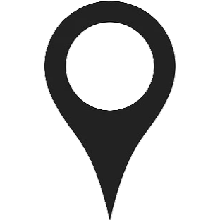

工业化人群(如欧美国家)：微生物多样性低，以Bacteroides为主。

非工业化人群(如Hadza狩猎采集者)：微生物多样性高，富含纤维降解菌(如Prevotella)。
印度南部(杂食性饮食)：
↑ Bacteroides、↑ Faecalibacterium。
印度北部(植物性饮食)：
↑ Prevotella。
移民至西方国家后，微生物组逐渐“西化”，Prevotella减少，Bacteroides增加。